layout: true class: theme-whiskey, slides-left --- name: cover # JavaScript RoadTrip Jannik Keye / Michael Jaser<br> Peerigon GmbH<br> [@mmeaku](https://twitter.com/mmeaku) <img id="slide-cover-img" src="./assets/peerigon-logo.png" width="400"> --- layout: true class: theme-whiskey, slides-centered --- class: slides-chapter ## ☎️ The call --- >"We need an infotainment for the car we're building. It's not too complicated, just a few controls..." Sono Motors --- ## First draft 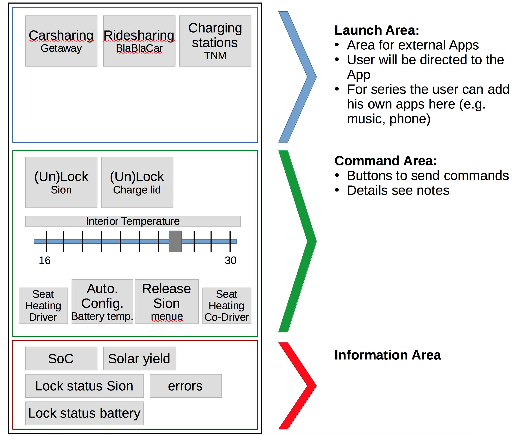 --- >"That looks alright. If the car provides the required interfaces and the runtime (a Browser), we can build it." Me --- class: slides-chapter ## Wait! Sono Motors? --- ## Sono Motors 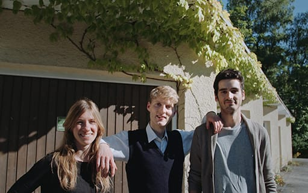 - aims to build an effordable solar powered electric car - founded in 2016 - based in Munich --- 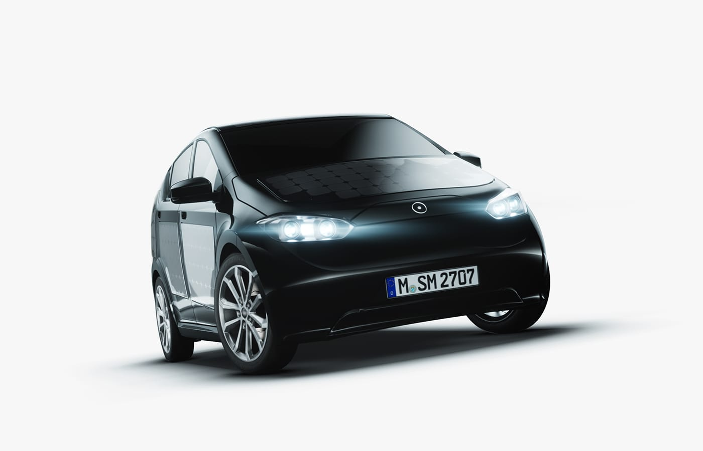 --- ## Sion >We developed the Sion, a electric car with a range of 250 km and a price of 16.000 €. Its integrated solar cells generate further energy to cover up to 30 km per day. Our vision is simple: Providing a mobility concept for a future without mineral oil and emissions. <small>https://www.sonomotors.com/about.html#st-timeline</small> --- class: slides-chapter ## 🚀 Let's build it! --- ## 💡 First idea: Mirroring - connect Android phone with Dashboard - open Sono App on phone - controllable both ways - Android provides Maps / Music / etc. --- ## 🙈 Sounds easy, but... - it's only an upscaled version - poor usability / pixelated - not designed to be controlled while driving --- ## 📐 Back to the drawing board... --- class: slides-chapter ## Betting on the web --- 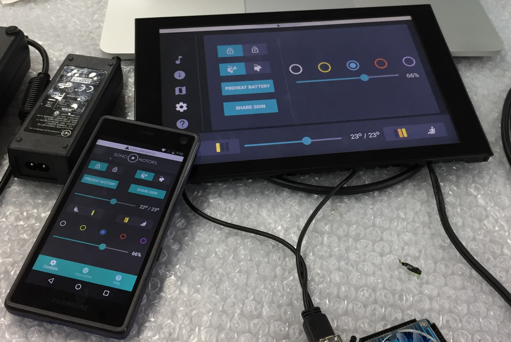 --- ## 💡 Responsive PWA - a single codebase - platform agnostic (flexibilty++) - works on Dashboard (10") and Smartphones (Android, iOS) - almost identical functionality - synchronized on application level - OTA updates --- ## 😓 Downside - by ditching Android, the app grew more complex - Music and Navigation as part of the app, not the OS - tight deadline --- class: slides-chapter ## Planned Features --- ## BreSono (illuminated moss) 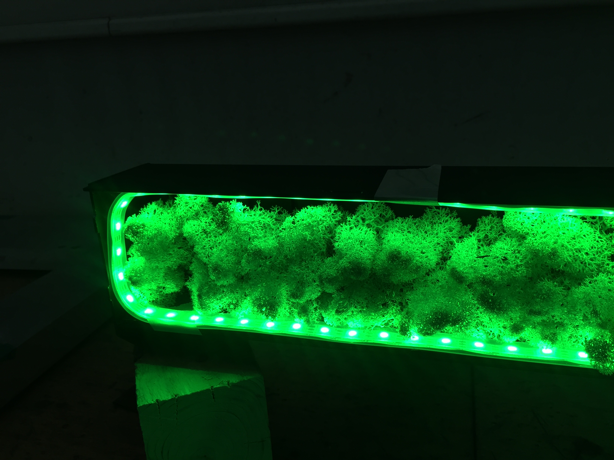 - control color & brightness via app --- ## Controls for the car 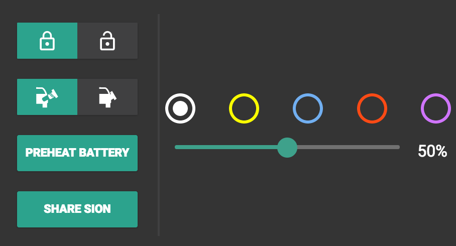 - open/close car & battery-lid --- ## Information pane 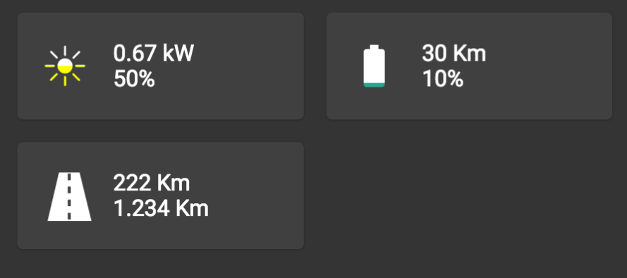 --- ## Help videos 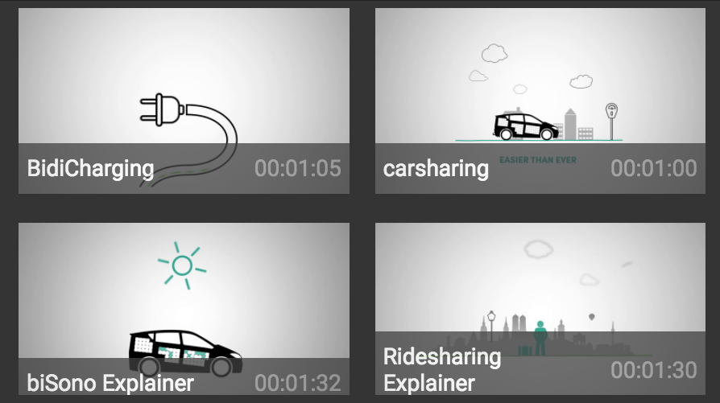 --- ## Bonus: Compute cockpit data 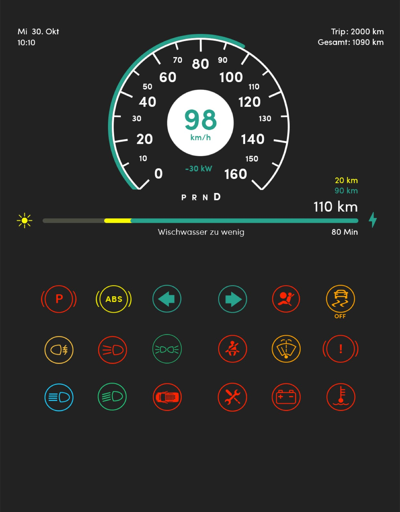 --- - controls breSono (LEDs) - provides navigation (GPS) - controls the car (CAN) - open/close battery lid - lock/unlock car - computes cockpit information (CAN) - hosts a Hotspot (Wifi) - shares mobile data connection (LTE) --- class: slides-chapter ## Architecture --- class: slides-chapter ## UX Development / Design --- Jannik --- class: slides-chapter ## Hardware --- class: slides-chapter ## Sonobox --- - bridge between car and web app - runs a Node.js server - calculates estimates and triggers commands - sends data to the cockpit --- ## RaspberryPi Zero W 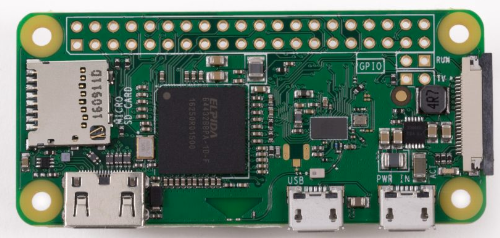 <small>https://www.raspberrypi.org/products/raspberry-pi-zero-w/</small> - 1GHz, single-core CPU - 512MB RAM - 802.11 b/g/n wireless LAN - 1x MicroUSB --- ## Addons - CANShield - USB Ethernet Dongle - GPS - LED --- ## CAN-Bus - Controller Area Network - developed by Bosch since 1983 - message-based protocol - goal: reduce amount of cables - used by OBD-II --- <img src="./assets/can.gif" style="width: 35vw" /> --- 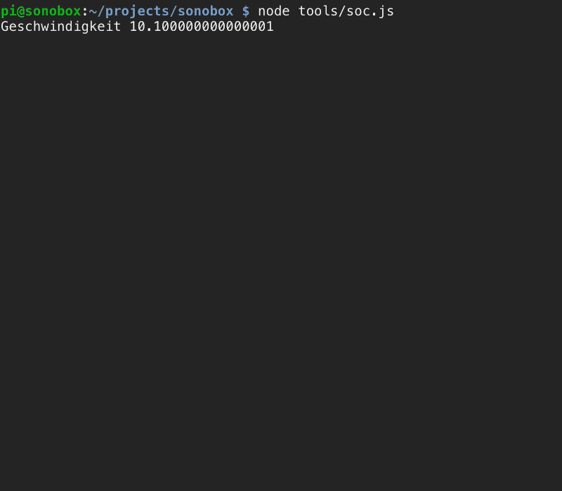 --- ## Demo <video src="./assets/BiSono.mp4" controls="controls" style="height: 50vh" /> --- class: slides-chapter ## Dashboard --- ## Requirements - we need a device which runs the web app smoothly - Android would be sweet (touch support, most recent Chrome, PWA support) - energy efficient --- ## Odroid XU4 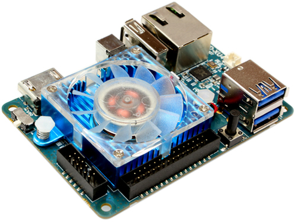 - CPU: [Samsung Exynos5422 Octo Core (2.2 GHz)](http://www.samsung.com/semiconductor/minisite/Exynos/Solution/MobileProcessor/Exynos_5_Octa_5422.html) - GPU: Mali T628 OpenGL ES 3.1/2.0/1.1 and OpenCL 1.2 - RAM: 2Gbyte LPDDR3 - same as Samsung Galaxy S5 (2014) - runs Android 7 --- class: slides-chapter ## ⚡ Challenges --- ## 🎛️ Protoyping - new technolgies for everyone - the most agile agile you'd ever see - changes on a daily basis - estimates almost impossible - thinking in fallbacks --- 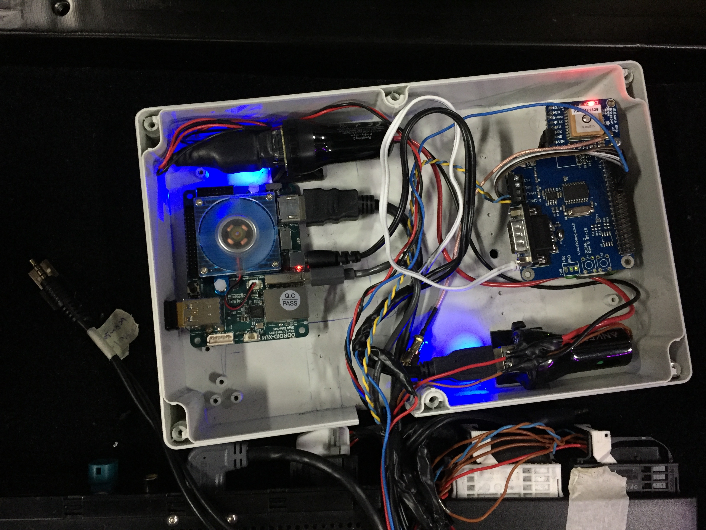 --- ## 🕛 DDD (Deadline driven development) - release dates were immutable - long hours and night shifts - JIT all the things (i.e. SION arrived 4 hours before release) - not enough time to ensure stability --- 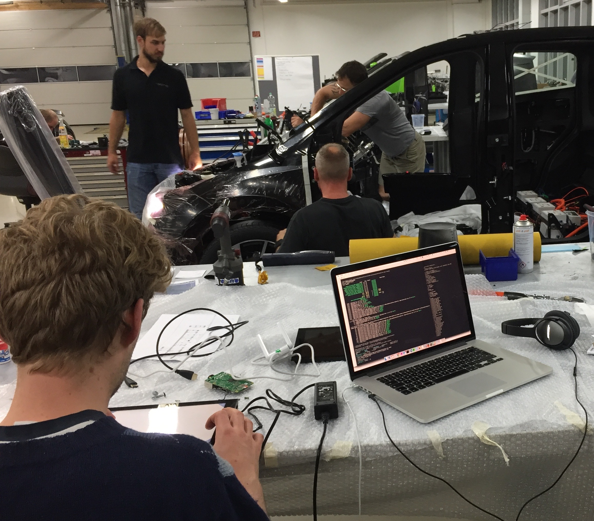 --- ## 🤖 Hardware !== Software - it takes time to deliver - Same Day Delivery is our friend - you can't just try endless devices / sensors, etc. - hardware is not always portable - testing is more challenging --- 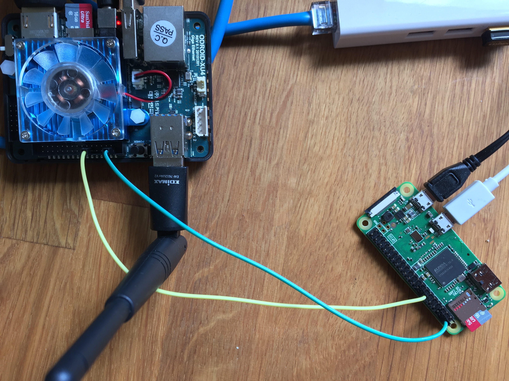 --- 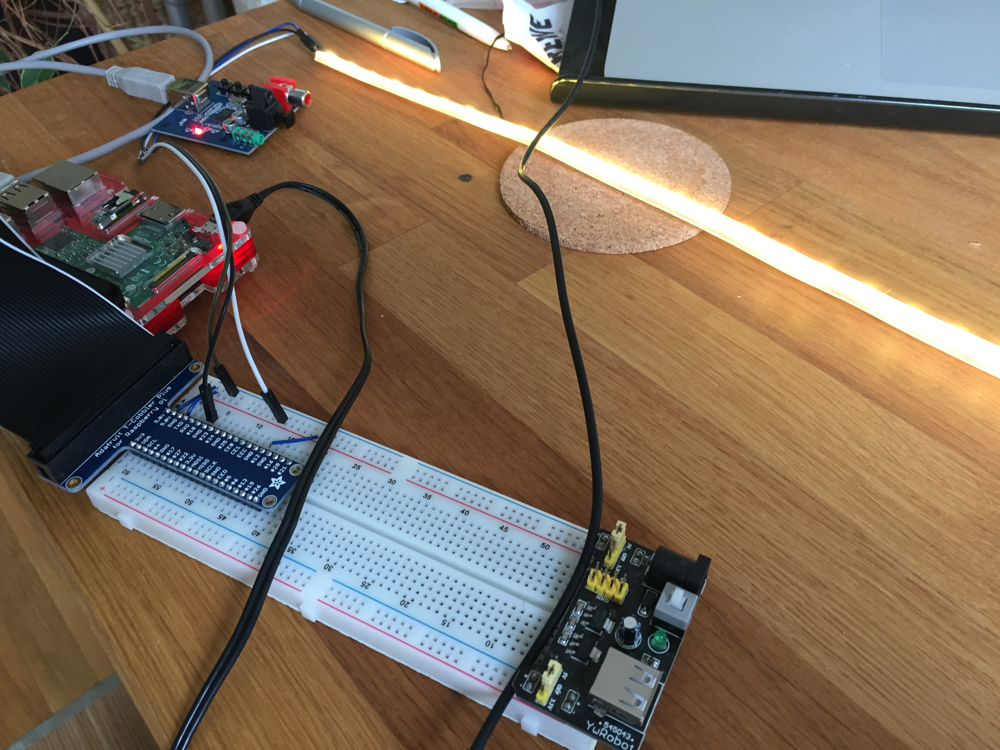 --- ## 🎯 Testing - no _identical_ local testing setup possible (i.e. CAN) - Quality time with the SION was scarce (avg. 5 people working at the same time) - the API is able to fake everything for testing - BUT: You still need to test the _actual_ device - Try to be as flexible as possible (=> Remote development) --- ## Thank you ---